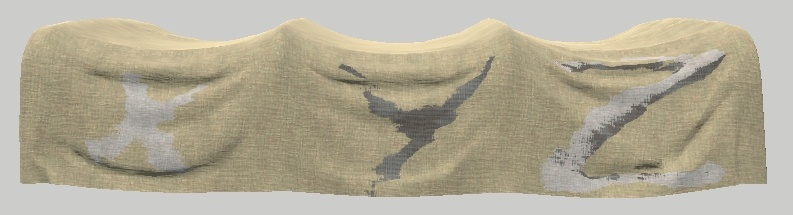

rendinst_vcolor_layered
Overview
The rendinst_vcolor_layered shader is designed for rendering instances with
three detail layers, which blend based on:
The vertex color channels of the object’s geometry.
Corresponding heightmaps for each layer.
Parameter List
script:t="atest=1"andscript:t="details_alphatest=0,0,0,0"– These parameters work together to enable alpha test. The first parameter (atest) activates alpha test, while the second (details_alphatest) sets the alpha test strength for each detail layer.script:t="details_tile=1,1,1,0"– Controls the tiling of the detail textures.script:t="invert_heights=0,0,1,0"– Inverts the heightmaps for each detail layer. Fractional values can be used. The value of0.5turns heightmap into neutral gray fill.script:t="paint_details=0,0,0,0"– Allows painting over the three detail layers.script:t="overlay_color_from=0,0,0,0"– Defines the starting color for overlay blending using linear interpolation (LERP), with masking defined by the blue vertex color channel.script:t="overlay_color_to=0,0,0,0"– Defines the target color range for overlay blending, from0(black, RGB:0,0,0) to1(white, RGB:255,255,255).
Important
If vertex color is not painted after applying this shader, the Asset Viewer will produce an error when selecting the model (related to the 5th mapping channel). Ensure vertex colors are used with this shader, as it will not function correctly without them.
Textures
tex0: Detail1 Diffuse (Albedo)
tex2: Detail1 Normals + Metalness + Smoothness
tex3: Detail2 Diffuse (Albedo)
tex4: Detail2 Normals + Metalness + Smoothness
tex5: Detail3 Diffuse (Albedo)
tex6: Detail3 Normals + Metalness + Smoothness
Parameters
Alpha Test
This shader is suitable for materials that require transparency, such as tattered cloth or paper. Alpha test is controlled by two parameters:
script:t="atest=1"– Activates alpha test for the material. This parameter alone does not alter the appearance untildetails_alphatestis specified.script:t="details_alphatest=0,0,0,0"– Specifies the alpha test strength for each detail layer, with values ranging from0to1”:”1st component: Detail1
2nd component: Detail2
3rd component: Detail3
4th component: Unused, but required.
Detail Tiling
The detail tiling parameter behaves similarly to the rendinst_perlin_layered shader.
script:t="details_tile=1,1,1,0":1st component: Tiling for Detail1.
2nd component: Tiling for Detail2.
3rd component: Tiling for Detail3.
4th component: Unused, but required.
Procedural Painting
This feature allows procedural painting over the detail layers (similar to rendinst_perlin_layered shader).
script:t="paint_details=0,0,0,0"– Allows painting over the three detail layers.1st component: Paint strength for Detail 1 (fractional values allowed).
2nd component: Paint strength for Detail 2.
3rd component: Paint strength for Detail 3.
4th component: Selects line of painting palette.
Vertex Color Overlay
The shader uses the blue channel of the vertex color to create a global color overlay map. Two colors are blended using linear interpolation (LERP), with the map defined by the blue vertex color channel.
script:t="overlay_color_from=0,0,0,0"– Defines the starting color for the blend.script:t="overlay_color_to=0,0,0,0"– Defines the target color for the blend.The first three components represent the RGB values, ranging from
0(black) to1(white).The 4th component is currently unused.
This overlay modulates the blending of the detail layers. For example, storing curvature data in the blue vertex color channel can create an effect where cracks in stone appear black, while raised areas appear red. By default, both colors are set to mid-gray, so no additional color effect is applied.
Important
The “from” color is applied globally by default. To prevent the entire model
from being painted, set the “from” color to a neutral gray (0.5, 0.5, 0.5, 0)
and configure the “to” color to highlight specific details.
Functionality
VertexPaint Modifier
Here are key settings you’ll need when using the VertexPaint modifier with this shader:
{kind=link}
This button toggles the display of vertex colors on the model.
{kind=link}
Tools for painting or filling the vertex color.
{kind=link}
Brush opacity and size settings (default size is 20 meters).
{kind=link}
Options for geometry selection while painting.
{kind=link}
Smooth brush tool for blending painted colors.
{kind=link}
Vertex color blending modes (similar to Photoshop layers). When using multiple modifiers, it’s recommended to paint each color channel (R, G, and B) separately. The red channel typically uses the “normal” blend mode, while green and blue use Add mode.
Important
By default, vertex colors on the model are set to white (maximum values for all channels). To begin painting, fill the entire model with black.
Blending Details
The shader blends three detail layers using both vertex colors and heightmaps.
Vertex Color Blending
Initially, Detail1 is applied across the model. Detail2 and Detail3 are blended into it based on the red and green vertex color channels.
For example, painting an area with 100% red will apply Detail2 there, while 100% green will apply Detail3. Smooth gradients in the vertex colors create more natural transitions between the detail layers.
Heightmap Blending
The brightness of the heightmaps influences how strongly each detail layer blends. The intensity of the vertex colors is multiplied by the corresponding heightmap brightness.
For example:
If two detail layers have identical heightmaps and vertex color weights, they will blend evenly.
A detail with a black heightmap and another with a mid-gray heightmap will blend differently, as the mid-gray heightmap will have a higher visual impact.
Visual Examples
Let’s consider an example of a car tarp using multiple detail textures and their corresponding heightmaps.
fabric_tarpaulin_a_tex_d – Detail1 and Detail2 |
fabric_shabby_a_tex_d – Detail3 |
|---|
{kind=link}
{kind=link}
{kind=link}
{kind=link}
Shader Parameters:
|
|
3ds Max |
Asset Viewer |
|---|
{kind=link}
{kind=link}
By default, the entire model is covered by Detail1 (as we cannot leave the model without any detail). For clarity, it tinted a yellowish color (see shader parameters).
{kind=link}
{kind=link}
X-axis (100% Red): Subtracts Detail2 from Detail1.
Y-axis (100% Green): Subtracts Detail3 from Detail1.
Z-axis (100% Green and Red): Subtracts both Detail2 and Detail3 from Detail1.
These details blend based on their heightmaps (you may notice an uneven transition from Detail2 to Detail3), but the blend is not perfect – Detail2’s heightmap is stronger than Detail3’s.

{kind=link}
We introduced some subtle variation by applying a 45% fill of Detail2 across the fabric. This allows Detail2 to appear in scattered areas, blending based on the heightmaps, which adds visual variety.
{kind=link}
{kind=link}
{kind=link}

Next, we enhanced the raised parts of the tarp with a 55% application of Detail2, simulating faded areas on protruding fabric sections. We used 55% because 45% of the tarp was already covered with red (Detail2).
If we applied 100%, the result would have been 145%, creating an overly saturated color and causing the wear effect to spread too much across the fabric. There are two sets of screenshots – before and after blurring the painted areas.
Shader Parameters:
|
|
3ds Max |
Asset Viewer |
|---|
{kind=link}
{kind=link}
We added 100% spots of Detail3, then applied a 30% smoothing to blend them. At 100%, Detail3 would appear too weak due to its less pronounced heightmap compared to Detail1 and Detail2.
Notice the spots around Detail3, which are actually from Detail2, even though we didn’t directly paint them. This occurs because the entire tarp was filled with 45% of Detail2, and wherever Detail3 partially subtracts from Detail1, Detail2 also starts to blend in.
We configured the colors for Detail2 and Detail3 to reduce the color contrast. Additionally, we applied an alpha test to Detail3 (although it’s not very visible in the screenshot).
Shader Parameters:
|
|
3ds Max |
Asset Viewer |
|---|
{kind=link}
{kind=link}
{kind=link}
{kind=link}
{kind=link}
{kind=link}
We added a layered overlay in the blue channel. The color gradient ranges from
50% gray (which doesn’t affect the texture) 0.5,0.5,0.5,0 to 0% black
0,0,0,0.
To illustrate the “from-to” color concept, consider the following example:
script:t="overlay_color_from=0.549,0.239,0.239,0" (~RGB 140,61,61).
{kind=link}
Any area not painted with blue will be colored using the “from” value. This approach can be useful in some cases, but not always necessary.
{kind=link}
{kind=link}
As a final touch, let’s create a burnt corner on the fabric. While this effect may not look perfect without further geometry adjustments, the intention should be clear. Note that we had to erase the initial 45% red fill in that area to make Detail3 stand out properly.
Here’s an example of appropriate geometry with the shader applied correctly (only one detail layer is used across the model), showcasing burnt edges:
{kind=link}
Most of the stages were painted in separate layers:
Global application of Detail2.
Global application of Detail3.
Detail3 applied to the burnt corner.
Overlay for fabric folds.
Overlay for a dirty tarp top.
Overlay for individual spots.
Overlay for the burnt corner.
Usage
This shader is well-suited for:
Various types of fabric that don’t require fine details (not suitable for clothing).
Stones, where you can highlight sharp edges (similar to a cavity effect) and darken the rest.
Props without sharp details, like clay vases. However, it’s less applicable in such cases because this shader works best with a dense mesh. Otherwise, it will only affect large areas.
For props, it’s usually cheaper to create a unique texture or use the rendinst_mask_layered shader instead.